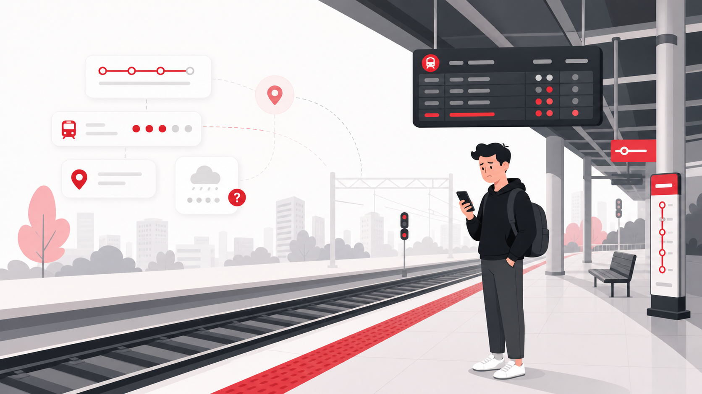
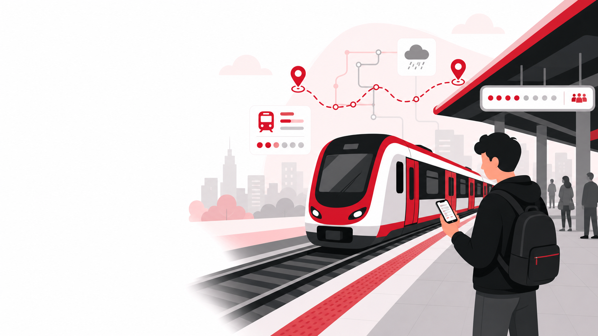
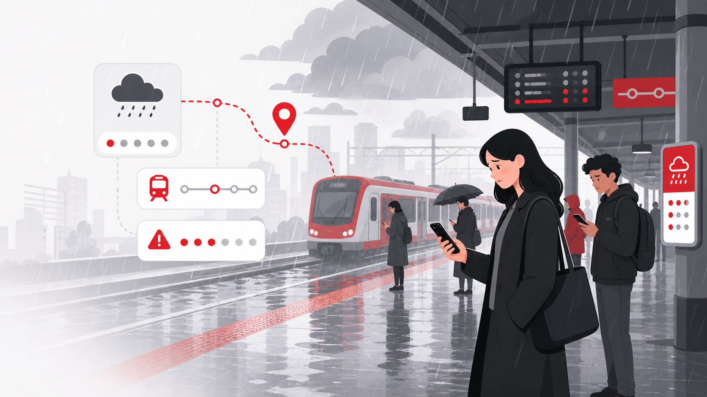
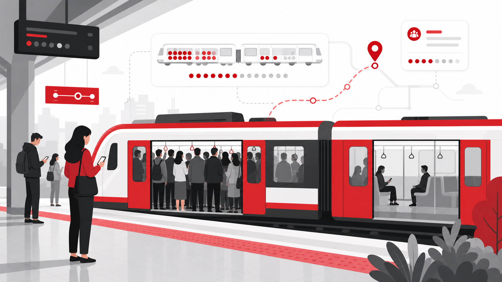
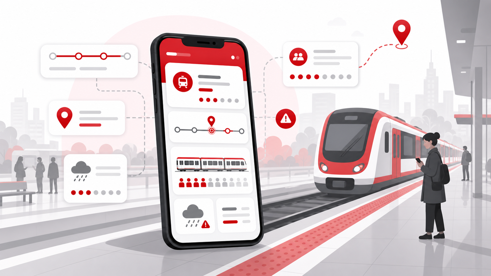
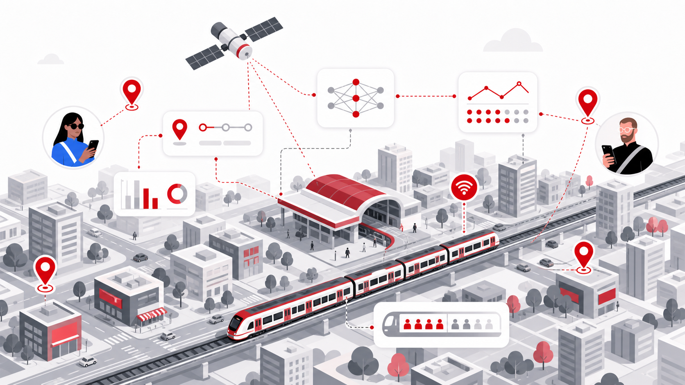
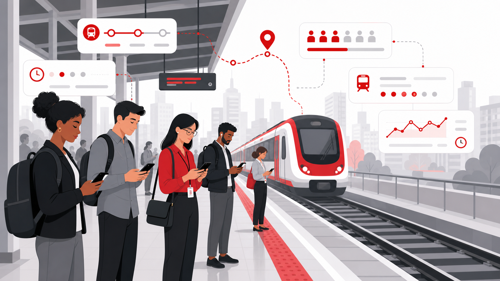
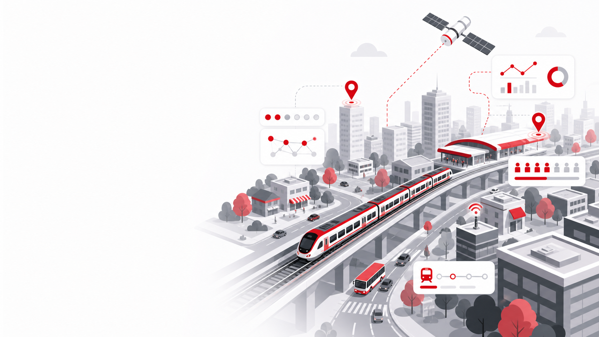

01
Dados espaciais, inteligência artificial e transporte ferroviário conectados para melhorar sua jornada antes mesmo dela começar.





Uma experiência pensada para passageiros que precisam de previsibilidade, clareza e agilidade no transporte ferroviário urbano.
Como funcionaSatélites
IA preditiva
Análise urbana
Usuário


O LocalLead transforma informações dispersas em decisões simples para o passageiro.
Fale com o grupo